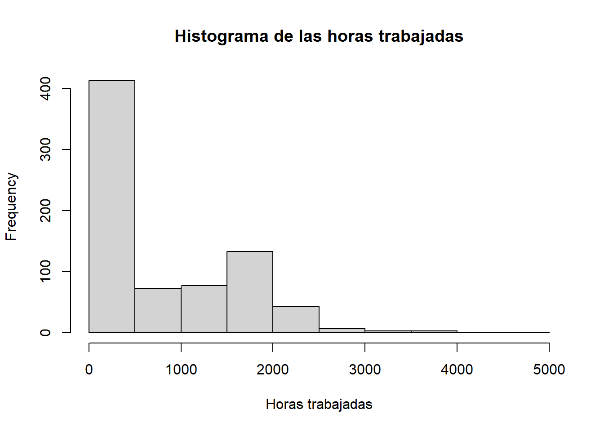
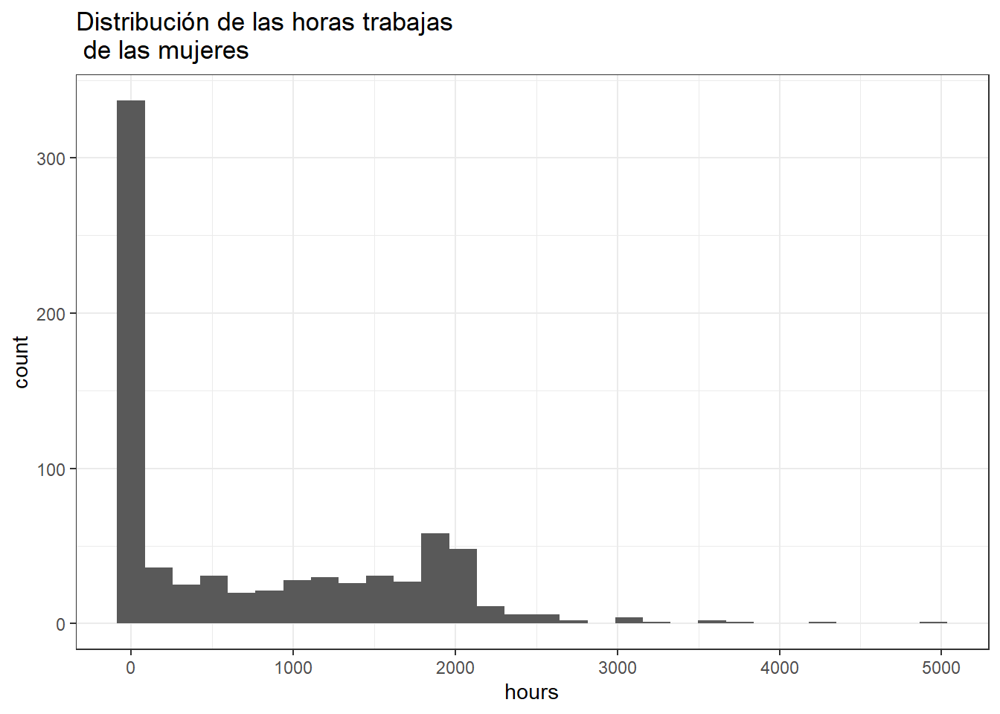
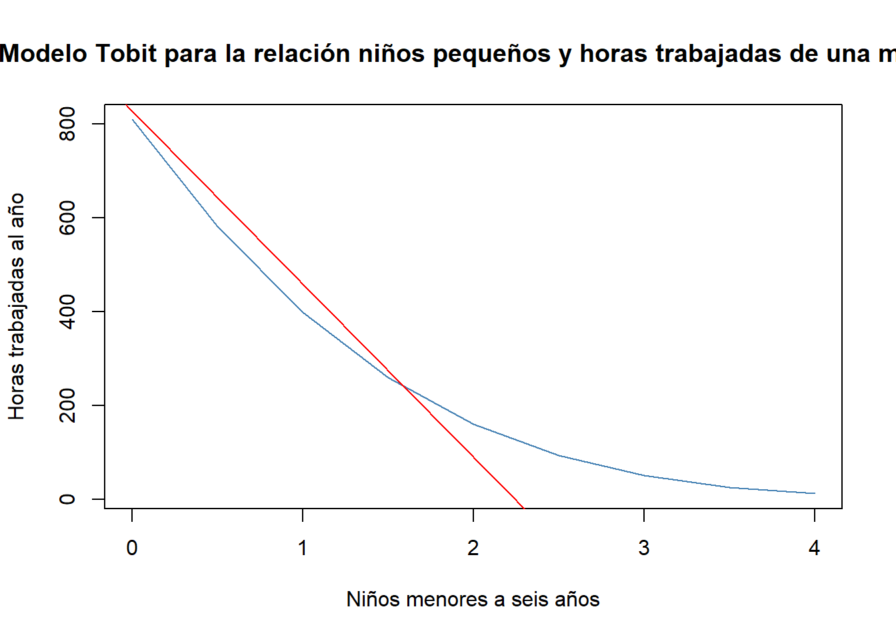

pacman::p_load(wooldridge,
dplyr,
ggplot2,
stargazer,
censReg,
AER)4 Modelo Tobit
4.1 Motivación
Otro tipo de variable dependiente limitada es una de respuesta de solución de esquina. La variable dependiente es cero para una fracción no trivial representativa, pero también existen valores de una distribución aproximadamente continua a través de valores positivos. Por ejemplo, el salario, habrá algunos individuos que ganen cero dólares por hora y otros que ganen valores aproximadamente continuos. Otro ejemplo, la cantidad que el individuo gasta en alcohol cada mes. Esta variable asume un amplio rango de valores en personas mayores a los 18 años.
4.2 Especificación matemática
Sea \(y\) una variable que asume datos aproximadamente continuos en valores estrictamente positivos, pero que asume cero con probabilidad positiva. En este caso se podría usar un modelo lineal para \(y\). De hecho, un modelo lineal podría ser una buena aproximación a \(E(y|x_1,x_2,...,x_k)\) en especial para \(x_j\) cerca de los valores promedio. Nuevamente, obtendríamos valores ajustado negativos, lo que generaría predicciones negativas para \(y\), es decir, problemas análogos a los del MPL. También el supuesto de que una variable explicativa que aparece en la forma de nivel tiene un efecto parcial constante sobre \(E(y|\mathbf{X})\) puede ser egañoso. Problablemente la \(Var(y|\mathbf{X})\) sería no constante o heterocedástica, debido a que la distribución de \(y\) se acumula en cero; esta claro que \(y\) no puede tener una distribución normal condicional. Por lo tanto, al igual que en el MPL la inferencia sólo se justifica asintóticamente.
Es importante tener un modelo que implique valores predichos no negativos para \(y\) y, que tenga efectos parciales sensatos sobre un amplio rango de las variables independientes. Además, algunas veces es necesario estimar las características de la distribución de \(y\) dadas \(x_1,...,x_k\) más alla de la expectativa condicional. El Modelo Tobit es idóneo, el cual expresa la respuesta observada, \(y\), en términos de una variable latente subyacente:
\[y^*=\beta_0+\mathbf{x\beta}+u, u|\mathbf{x}\sim Normal(0,\sigma^2)[1]\] \[y=max(0,y^*)[2]\]
La variable latente \(y^*\) satisface los supuesto del modelo lineal clásico, en particular tiene:
Distribución normal
Homocedástica con una media condicional lineal
La ecuación [2] implica que la variable observable, \(y=y^*\Leftrightarrow y^*\geq0\), caso contrario \(y=0\Leftrightarrow y^*<0\). Debido a que \(y^*\) se distribuye como una normal, \(y\) tiene una distribución continua a través de valores estrictamente positivos. En particular, la densidad de \(y|\mathbf{X}\) es la misma de \(y^*|\mathbf{X}\) para valores positivos, Además:
\[P(y=0|\mathbf{x})=P(y^*<0|\mathbf{x})=P(u<-\mathbf{x\beta}|\mathbf{x})=\\P(u|\sigma<-\mathbf{x\beta/\sigma|x})=\Phi(\mathbf{-x\beta/\sigma})=1-\Phi(\mathbf{x\beta/\sigma}) [3]\] Notar que \(u/\sigma\sim N(0,1)\) y es independiente de \(\mathbf{x}\); se ha absorbido el intercepto en \(\mathbf{x}\) por simplicidad notacional. Por lo tanto, si \(\mathbf{x_i},y_i\) se extraen aleatoriamente de la población, la densidad de \(y_i|\mathbf{x_i}\) es:
\[(2\pi\sigma^2)^{-1/2}exp[-(y-\mathbf{x_i\beta})^2/(2\sigma^2)]=(1/\sigma)\phi[(y-\mathbf{x_i\beta})/\sigma], y>0[4]\]
\[P(y_i=0|y-\mathbf{x_i})=1-\Phi(\mathbf{x_i\beta/\sigma})[5]\] Donde \(\phi\) es la función de densidad normal estándar
De las ecuaciones [4] y [5] se obtiene la función log-verosimilitud para cada observación \(i\):
\[\mathcal{l_i(\beta,\sigma)}=1(y_i=0)log[1-\Phi(\mathbf{x_i\beta/\sigma})]+1(y_i>0)log((1/\sigma)\phi[(y_i-\mathbf{x_i\beta})/\sigma]) [6]\] Notese que, esto depende de \(\sigma\), la desviación estándar de \(u\), así como de las \(\beta_j\). La log-verosimilitud para una \(n\) aleatoria se obtiene al sumar [6], a través de todas \(i\). Las estimaciones de máxima verosimilitud de \(\beta\) y \(\sigma\) se obtienen al maximizar la log-verosimilitud; esto requiere métodos numéricos, pero el software lo realiza.
Para restricciones de exclusión múltiples es fácil usar la prueba de Wald o la razón de verosimilitudes.
4.3 Interpretaciones de las estimaciones Tobit.
Los resultados de Tobit y MCO son casi siempre similares, lo que hace tentador interpretar las \(\widehat{\beta}_j\) de Tobit como si fueran estimaciones de MCO, pero se advierte que no es así de fácil.
La [1] muestra que las \(\beta_j\) miden efectos parciales de las \(x_j\) sobre el \(E(y^*|\mathbf{x})\). La variable que se busca explicar es \(y\), pues es el resultado observado (las horas trabajadas o la cantidad donaciones)
De la ecuación [5] podemos obtener \(P(y=0|\mathbf{x})\), de ahi podemos estimar \(P(y>0|\mathbf{x})\) ¿Qué pasa si se quiere estimar el valor esperado de \(y\) en función \(\mathbf{x}\)?. En los modelos Tobit, existe dos expectativas. La primera \(E(y|y>0,\mathbf{x})\), que recibe el nombre de expectativa condicional. La segunda es \(E(y|\mathbf{x})\), conocida como la expectativa no condicional. La expectativa \(E(y|y>0,\mathbf{x})\) nos dice que, para los valores dados de \(\mathbf{x}\), el valor esperado de \(y\) para la subpoblación donde \(y>0\), esta expectativa se hallar con facilidades a partir \(E(y|\mathbf{x})\):
\[E(y|\mathbf{x})=P(y>0|\mathbf{x}).E(y|y>0,\mathbf{x})=\Phi(\mathbf{x\beta}/\sigma).E(y|y>0,\mathbf{x}) [7]\] Para obtener \(E(y|y>0,\mathbf{x})\) se puede usar un resultado para las variables aleatorias con distribución normal: si \(z\sim Normal(0,1)\) entonces \(E(z|z>c)=\phi(c)/[1-\Phi(c)] \forall c\) constante. Pero \(E(y|y>0,\mathbf{x})=\mathbf{x\beta}+E(u|u>-\mathbf{x\beta})=\\\mathbf{x\beta}+\sigma E[(u/\sigma)|(u/\sigma)>-\mathbf{x\beta/\sigma}]=\\\mathbf{x\beta}+\sigma\phi_(\mathbf{x\beta}/\sigma)/\Phi(\mathbf{x\beta}/\sigma)\)
Debido a que: \(\phi(-c)=\phi(c), 1-\Phi(c)=\Phi(c)\), \(u/\sigma\sim Normal (0,1)\) independiente de \(\mathbf{x}\). Podemos reecribir a [7] así:
\[E(y|y>0,\mathbf{x})=\mathbf{x\beta}+\sigma\lambda(\mathbf{x\beta/\sigma})\] Donde: \(\lambda(c)=\frac{\phi(c)}{\Phi(c)}\) recibe el nombre de la razón inversa de Mills
4.4 Ejemplo
Estimación Tobit y MCO de las horas anuales trabajas
La variables
Dependiente (\(Y\)) son las horas anuales trabajadas por las mujeres
Variables explicativas o regresoras:
\(nwifeinc\): Salario de esposo en miles de dólares
\(educ\): años de educación
\(exper:\) años de experiencia
\(exper^2\): años de experiencia al cuadrado
\(age:\) edad de las mujeres
\(kidslt6\): Niños menores a seis años
\(kidsge6\): Niños entres 6 y 18 años
4.4.1 Verificar que la variable dependiente sea de solución de esquina
activación de paquetes
datos <- data("mroz")
# Histograma
hist(mroz$hours, main = "Histograma de las horas trabajadas", xlab = "Horas trabajadas")
library(ggplot2)
ggplot(data = mroz, aes(x=hours))+
geom_histogram(bindwidth=10)+
theme_bw()+
labs(title = "Distribución de las horas trabajas\n de las mujeres")Warning in geom_histogram(bindwidth = 10): Ignoring unknown parameters:
`bindwidth``stat_bin()` using `bins = 30`. Pick better value with `binwidth`.
En el anterior histograma se puede observar que las mayor cantidad de obervaciones se encuentran en cero, así tenemos indicios de que la variable \(y\) es de solución de esquina, pues a además, la horas trabajadas anuales se amplían hasta 5000 al año. Para saber la proporcion de ceros que tiene la variable dependiente dicotomizamos dicha variables
# Transformación de la variable en binaria
mroz$dico.hours <- ifelse(mroz$hours==0,0,1)
# Calculando el porcentaje de ceros en Y
prop.table(table(mroz$dico.hours))*100
0 1
43.16069 56.83931 4.4.2 Usando MCO
Vamos a determinar las horas trabajadas al año por la mujeres, usando MCO
model.mco<-lm(hours~
nwifeinc+
educ+
exper+
expersq+
age+
kidslt6+
kidsge6,
data=mroz)
library(stargazer)
stargazer(model.mco,
type = "text",
dep.var.labels = "Horas al año trabajadas")
===============================================
Dependent variable:
---------------------------
Horas al año trabajadas
-----------------------------------------------
nwifeinc -3.447
(2.544)
educ 28.761**
(12.955)
exper 65.673***
(9.963)
expersq -0.700**
(0.325)
age -30.512***
(4.364)
kidslt6 -442.090***
(58.847)
kidsge6 -32.779
(23.176)
Constant 1,330.482***
(270.785)
-----------------------------------------------
Observations 753
R2 0.266
Adjusted R2 0.259
Residual Std. Error 750.179 (df = 745)
F Statistic 38.495*** (df = 7; 745)
===============================================
Note: *p<0.1; **p<0.05; ***p<0.01# Si la variable "y" ajustada tiene valores menores que cero, significa que no es un buen ajuste
summary(model.mco$fitted.values) Min. 1st Qu. Median Mean 3rd Qu. Max.
-719.8 417.5 737.7 740.6 1093.1 1614.7 summary(mroz$hours) Min. 1st Qu. Median Mean 3rd Qu. Max.
0.0 0.0 288.0 740.6 1516.0 4950.0 Como me arroja valores negativos ajustados, significa que el MCO no esta ajustando de forma adecuada a la variable \(y\) de solución de esquina. Además, el efecto es constante. Esto me siguiere que se debe usar un modelo Tobit para ajustar una variable de solución de esquina.
4.4.3 Modelo Tobit
Por lo antes mencionado, ajustamos a la variable hours con un modelo Tobit
Verificar el cumpliendo de la variable hours para usar un modelo Tobit.
# Porcentaje de ceros en la variable hours
mroz$dico <- ifelse(mroz$hours==0,0,1)
prop.table(table(mroz$dico))*100
0 1
43.16069 56.83931 En este ejemplo aproximadamente el 43% de los datos de hours son cero y el resto datos aproximadamente continuos
Procedemos a ajustar un modelo Tobit
modelo.tobit <- censReg(hours~
nwifeinc+
educ+
exper+
expersq+
age+
kidslt6+
kidsge6,
data=mroz,
left = 0)
modelo.tobit2 <- tobit(hours~
nwifeinc+
educ+
exper+
expersq+
age+
kidslt6+
kidsge6,
data=mroz)Una vez, ejecutadas las dos regresiones (MCO y Tobit) las ponemos a comparación, de tal forma que, se replique la Tabla 17.2B del libro de Wooldridge (2010)
stargazer(model.mco,
modelo.tobit,
modelo.tobit2 ,
digits = 2,
type = "text",
df=F,
title = "Estimación Tobit y MCO de las horas anuales trabajas",
dep.var.labels = "Variable dependiente: horas anuales trabajadas",
header = F,
column.labels = c("MCO", "Tobit", "Tobit2"),
model.names = F)
Estimación Tobit y MCO de las horas anuales trabajas
====================================================================
Dependent variable:
------------------------------------------------
Variable dependiente: horas anuales trabajadas
MCO Tobit Tobit2
(1) (2) (3)
--------------------------------------------------------------------
nwifeinc -3.45 -8.81** -8.81**
(2.54) (4.46) (4.46)
educ 28.76** 80.65*** 80.65***
(12.95) (21.58) (21.58)
exper 65.67*** 131.56*** 131.56***
(9.96) (17.28) (17.28)
expersq -0.70** -1.86*** -1.86***
(0.32) (0.54) (0.54)
age -30.51*** -54.41*** -54.41***
(4.36) (7.42) (7.42)
kidslt6 -442.09*** -894.02*** -894.02***
(58.85) (111.88) (111.88)
kidsge6 -32.78 -16.22 -16.22
(23.18) (38.64) (38.64)
logSigma 7.02***
(0.04)
Constant 1,330.48*** 965.31** 965.31**
(270.78) (446.44) (446.44)
--------------------------------------------------------------------
Observations 753 753 753
R2 0.27
Adjusted R2 0.26
Log Likelihood -3,819.09 -3,819.09
Akaike Inf. Crit. 7,656.19
Bayesian Inf. Crit. 7,697.81
Residual Std. Error 750.18
F Statistic 38.50***
Wald Test 253.86***
====================================================================
Note: *p<0.1; **p<0.05; ***p<0.01Si quiero hacer comparables las estimaciones Tobit con MCO se debe multiplicar por el factor de ajuste. El factor escalar EPP \(n^{-1}\Sigma_{i=1}^n\Phi(\mathbf{x_i\hat{\beta}}/\hat{\sigma})\) resulta que es aproximadamente de 0.589. Por ejemplo, educ por 0.589 se obtiene \(0.589(80.65)\approx47.50\), por lo tanto, si una mujer aumenta un año a su educación, en promedio se sumara 47.5 horas de trabajo, esto es mayor al MCO, que es de 28.76. Se podría usar otro escalar a partir de los valores promedio de todas las variables explicativas, entonces se calcula el EPA \(\Phi(\mathbf{\bar{x}_i\hat{\beta}}/\hat{\sigma})\), es aproximadamente 0.645
4.4.3.1 Efecto marginal
A continuación, uso el comando margEff() para encontrar los efectos marginales de la estimación Tobit
summary(margEff(modelo.tobit)) Marg. Eff. Std. Error t value Pr(>|t|)
nwifeinc -5.32644 2.69073 -1.9796 0.0481217 *
educ 48.73409 12.96341 3.7594 0.0001837 ***
exper 79.50423 10.30497 7.7151 3.886e-14 ***
expersq -1.12651 0.32326 -3.4848 0.0005213 ***
age -32.87692 4.45770 -7.3753 4.383e-13 ***
kidslt6 -540.25683 66.62393 -8.1091 2.220e-15 ***
kidsge6 -9.80053 23.36134 -0.4195 0.6749580
---
Signif. codes: 0 '***' 0.001 '**' 0.01 '*' 0.05 '.' 0.1 ' ' 1Interpretaciones
- Si el salario del esposo aumenta en 1000 dólares al año, las horas de trabajo de la mujer disminuyen en 5.32 horas. El mayor efecto, que es altamente significativo, sigue siendo el aumento de niños pequeños, pues en promedio, si se aumenta un infante menor a seis años las horas de trabajo decrecen en 540 horas al año.
4.4.4 No linealidad del modelo Tobit
mod.stobit <- censReg(hours~kidslt6 ,
left = 0,
data=mroz)
mod.Smco <- lm(hours~kidslt6,
data=mroz)
stargazer(mod.stobit, type = "text")
===============================================
Dependent variable:
---------------------------
hours
-----------------------------------------------
kidslt6 -774.751***
(116.086)
logSigma 7.191***
(0.038)
Constant 489.522***
(59.105)
-----------------------------------------------
Observations 753
Log Likelihood -3,930.753
Akaike Inf. Crit. 7,867.505
Bayesian Inf. Crit. 7,881.377
===============================================
Note: *p<0.1; **p<0.05; ***p<0.01# Añadiendo la curva de regresión Tobit
x <- seq(0,4, 0.5)
y <- pnorm((coef(mod.stobit)[1]+coef(mod.stobit)[2]*x)/exp(coef(mod.stobit)[3]))*(coef(mod.stobit)[1]+coef(mod.stobit)[2]*x)+exp(coef(mod.stobit)[3])*dnorm((coef(mod.stobit)[1]+coef(mod.stobit)[2]*x)/exp(coef(mod.stobit)[3]))
plot(x=x,
y=y,
xlab = "Niños menores a seis años",
ylab="Horas trabajadas al año",
col="steelblue",
main="Modelo Tobit para la relación niños pequeños y horas trabajadas de una mujer",
type="l")
abline(mod.Smco, col="red")
En el gráfico anterior podemos observar que añadir un niño menor a seis años hace que se reduzca las horas dedicadas al trabajo. Sin embargo, en la linea azul del modelo Tobit la reducción de horas es decreciente a medida que se tiene más hijos pequeños, en el MCO (linea de color rojo), la reducción de las horas trabajadas es la misma con el aparecimiento de menor a seis años. Es decir, no importa si pasas de cero hijo a a uno hijo o de 3 a 4, la reducción de las horas trabajadas es la misma. No esta tomando en cuenta el aprendizaje de la madre con cada nuevo hijo.
4.4.4.1 Evaluación informal del modelo Tobit [Problemas de especificación]
probit.tobit <-glm(dico.hours~
nwifeinc+
educ+
exper+
expersq+
age+
kidslt6+
kidsge6,
data=mroz,
family = binomial(link = "probit"))
stargazer(probit.tobit,
type = "text",
title = "Estimación Tobit y MCO de las horas anuales trabajas",
dep.var.labels = "Variable dependiente: horas anuales trabajadas 0 y 1")
Estimación Tobit y MCO de las horas anuales trabajas
======================================================================
Dependent variable:
----------------------------------------------------
Variable dependiente: horas anuales trabajadas 0 y 1
----------------------------------------------------------------------
nwifeinc -0.012**
(0.005)
educ 0.131***
(0.025)
exper 0.123***
(0.019)
expersq -0.002***
(0.001)
age -0.053***
(0.008)
kidslt6 -0.868***
(0.118)
kidsge6 0.036
(0.044)
Constant 0.270
(0.508)
----------------------------------------------------------------------
Observations 753
Log Likelihood -401.302
Akaike Inf. Crit. 818.604
======================================================================
Note: *p<0.1; **p<0.05; ***p<0.01Luego procedemos a usar los coeficientes para la comparación entre el modelo Probit y el Tobit, el objetivo es evaluar la validez del modelo Tobit.
z <- coef(probit.tobit)
m <- coef(modelo.tobit)
comparacion <- data.frame(z, (m[1:8])/exp(m[9]), z-(m[1:8])/exp(m[9]))
names(comparacion) <- c("probit", "beta/sigma", "diferencia")
comparacion probit beta/sigma diferencia
(Intercept) 0.270073573 0.860326776 -0.590253203
nwifeinc -0.012023637 -0.007855680 -0.004167957
educ 0.130903969 0.071875266 0.059028703
exper 0.123347168 0.117256469 0.006090698
expersq -0.001887067 -0.001661427 -0.000225640
age -0.052852442 -0.048488379 -0.004364063
kidslt6 -0.868324680 -0.796795431 -0.071529248
kidsge6 0.036005611 -0.014454263 0.050459873Tobit de nwifeinc entre \(\widehat{\sigma}=1122.02\), se obtuvo \(-8.81/1122.02=-0.0079\); el coeficiente probit de nwifein es de cerca de \(-0.012\), lo cual es diferente, pero no de forma drástica. En kidslt6, el coeficiente estimado entre \(\widehat{\sigma}\) es de cerca de \(-0.797\), en comparación con la estimación probit de \(-0.868\). De nuevo, ésta no es una diferencia enorme, pero indica que tener niños pequeños tiene un efecto mayor sobre la decisión inicial de participar en la fuerza laboral que sobre cuántas horas elige trabajar una mujer una vez que está en dicha fuerza. (Tobit promedia de forma efectiva estos dos efectos.) No se sabe si los efectos son estadísticamente diferentes, pero son del mismo orden de magnitud.
Por lo tanto, se podría decir que el modelo Tobit es adecuado, parar ajustar a la variable hours
¿Qué sucede si se concluye que el modelo Tobit es inadecuado? Existen modelos, que suelen conocerse como modelos de dos partes o de obstáculos, que se pueden usar cuando Tobit es inadecuado